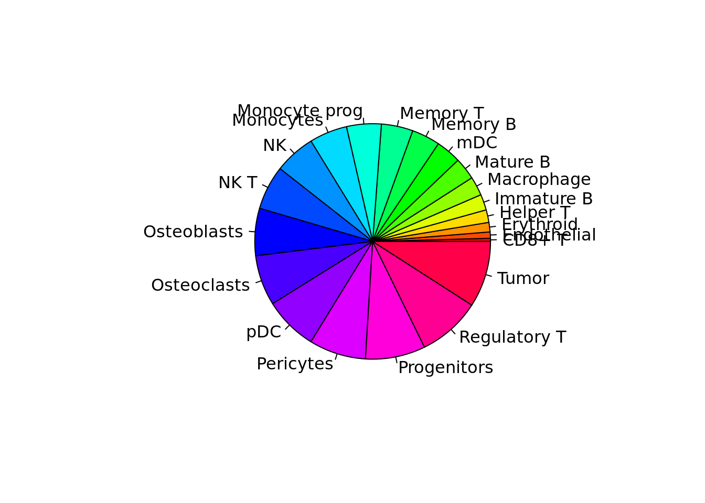
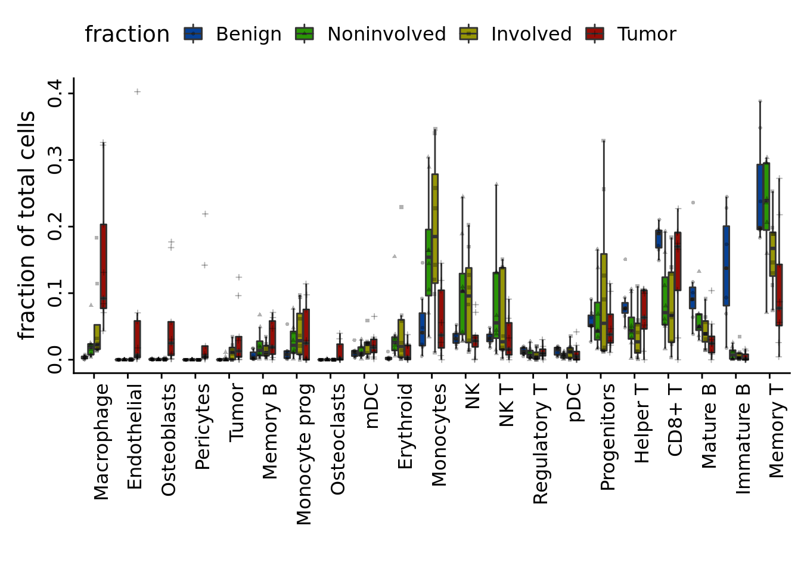
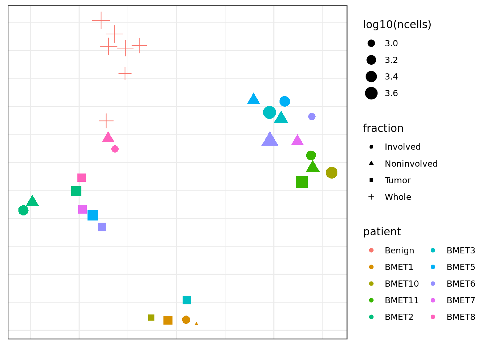
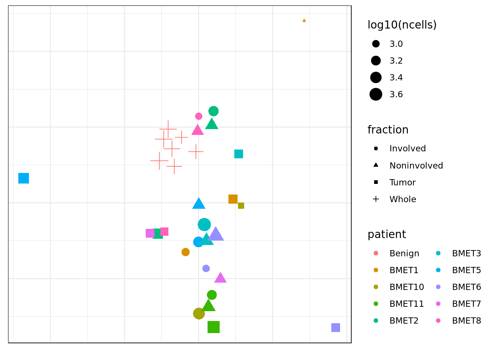
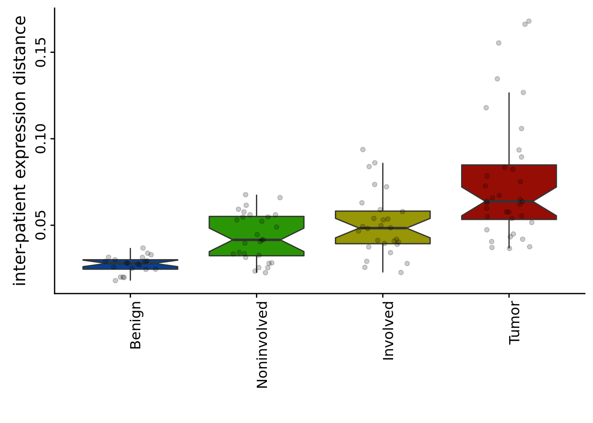
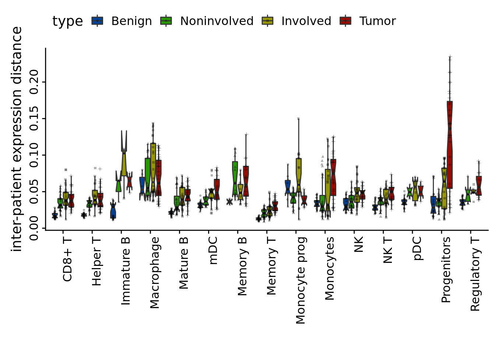
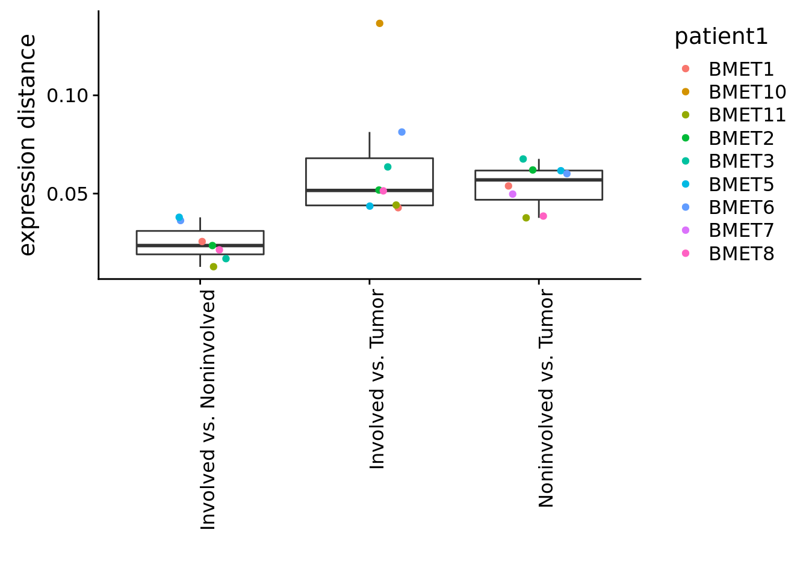
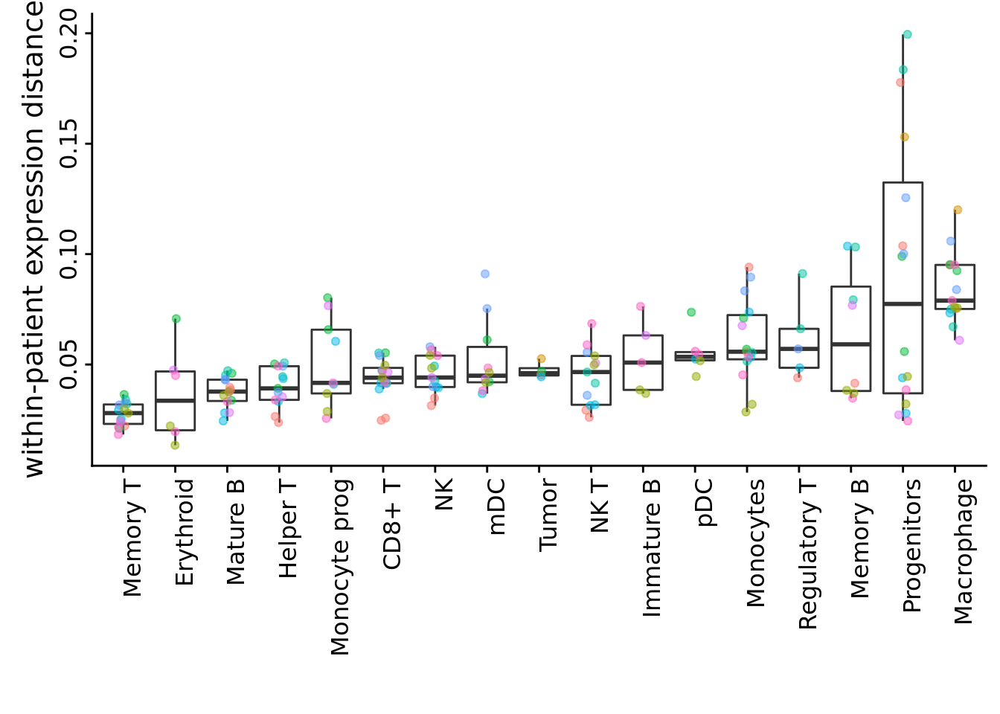

Last updated: 2019-04-23
Checks: 6 0
Knit directory: SecretUtils/
This reproducible R Markdown analysis was created with workflowr (version 1.3.0). The Checks tab describes the reproducibility checks that were applied when the results were created. The Past versions tab lists the development history.
Great! Since the R Markdown file has been committed to the Git repository, you know the exact version of the code that produced these results.
Great job! The global environment was empty. Objects defined in the global environment can affect the analysis in your R Markdown file in unknown ways. For reproduciblity it’s best to always run the code in an empty environment.
The command set.seed(20190415) was run prior to running the code in the R Markdown file. Setting a seed ensures that any results that rely on randomness, e.g. subsampling or permutations, are reproducible.
Great job! Recording the operating system, R version, and package versions is critical for reproducibility.
Nice! There were no cached chunks for this analysis, so you can be confident that you successfully produced the results during this run.
Great! You are using Git for version control. Tracking code development and connecting the code version to the results is critical for reproducibility. The version displayed above was the version of the Git repository at the time these results were generated.
Note that you need to be careful to ensure that all relevant files for the analysis have been committed to Git prior to generating the results (you can use wflow_publish or wflow_git_commit). workflowr only checks the R Markdown file, but you know if there are other scripts or data files that it depends on. Below is the status of the Git repository when the results were generated:
Ignored files:
Ignored: .Rhistory
Ignored: .Rproj.user/
Untracked files:
Untracked: .Rbuildignore
Untracked: DESCRIPTION
Untracked: NAMESPACE
Untracked: R/hello.R
Untracked: analysis/all.panels.pdf
Untracked: analysis/cell_type_total_tSNE.w.pdf
Untracked: analysis/fraction.all.pdf
Untracked: analysis/subtype_distances.Rmd
Untracked: analysis/subtype_distances2.Rmd
Untracked: analysis/subtype_distances4.Rmd
Untracked: analysis/transmute_peters_code.Rmd
Untracked: man/
Unstaged changes:
Modified: analysis/subtype_distances3.Rmd
Note that any generated files, e.g. HTML, png, CSS, etc., are not included in this status report because it is ok for generated content to have uncommitted changes.
These are the previous versions of the R Markdown and HTML files. If you’ve configured a remote Git repository (see ?wflow_git_remote), click on the hyperlinks in the table below to view them.
| File | Version | Author | Date | Message |
|---|---|---|---|---|
| Rmd | 5afe500 | githubz0r | 2019-04-23 | new package |
load packages and data
library(conos)Loading required package: MatrixLoading required package: igraph
Attaching package: 'igraph'The following objects are masked from 'package:stats':
decompose, spectrumThe following object is masked from 'package:base':
unionlibrary(parallel)
library(ggplot2)
library(Matrix)
library(data.table)
library(pagoda2)
library(cowplot)
Attaching package: 'cowplot'The following object is masked from 'package:ggplot2':
ggsavelibrary(dplyr)
Attaching package: 'dplyr'The following objects are masked from 'package:data.table':
between, first, lastThe following objects are masked from 'package:igraph':
as_data_frame, groups, unionThe following objects are masked from 'package:stats':
filter, lagThe following objects are masked from 'package:base':
intersect, setdiff, setequal, unionlibrary(abind)
library(tidyr)
Attaching package: 'tidyr'The following object is masked from 'package:igraph':
crossingThe following object is masked from 'package:Matrix':
expandrequire(Rtsne)Loading required package: Rtsne# load data
scon <- readRDS("/d0-mendel/home/meisl/Workplace/BMME/a.data/Selected_Joint_embdding/conA.rds")
scon <- Conos$new(scon)
# load annotations
ann2 <- readRDS('/d0-mendel/home/meisl/Workplace/BMME/a.data/Selected_Joint_embdding/cellAno/BMME_cell_ano_0130.rds')
typef <- as.factor(ann2)Initiate the analysis, how much of this is important? We start with some annotation changing and palette thingies
fraction.palette <- c(Benign='#064196',Noninvolved='#2a9606',Involved='#969606',Tumor='#960d06')
to.coarse.ann <- function(ann) {
ca <- setNames(as.character(ann),names(ann))
ca[grep("^CTL",ca)] <- "CD8+ T"
ca[grep("T regs",ca)] <- "Regulatory T"
ca[grep("TAM-|Macro",ca)] <- "Macrophage"
ca[grep("Mono-",ca)] <- "Monocytes"
ca[grep("mmature B",ca)] <- "Immature B"
ca[grep("Memory T",ca)] <- "Memory T"
ca[grep("Monocyte prog",ca)] <- "Monocyte prog"
ca[grep("Mature B cells",ca)] <- "Mature B"
ca[grep("Helper T",ca)] <- "Helper T"
ca[grep("memBcell",ca)] <- "Memory B"
ca[grep("PDC",ca)] <- "pDC"
ca <- gsub(" cell.?$","",ca)
return(as.factor(ca))
}
typefc <- to.coarse.ann(typef) # here we define typefc, we had to re-arrange the code; it's annot transformed a bit
type.palette <- setNames(rainbow(length(levels(typefc))),levels(typefc))
pie(1:length(type.palette),labels=names(type.palette),col=type.palette)
# correct fraction names, return a factor
get.fractions <- function(x,correct=T) {
xn <- names(x);
xf <- gsub(".*-","",as.character(x));
xf <- gsub("Whole","Benign",xf);
xf <- factor(xf,levels=c('Benign','Noninvolved','Involved','Tumor'))
if(!is.null(xn)) names(xf) <- xn;
xf
}
get.patients <- function(x) { gsub("-.*","",x) }
samplef <- lapply(scon$samples,function(x) rownames(x$counts))
samplef <- as.factor(setNames(rep(names(samplef),unlist(lapply(samplef,length))),unlist(samplef)))
fractionf <- get.fractions(samplef)
samplef <- samplef[names(typef)] # categories but with sample info
fractionf <- fractionf[names(typef)] # categoriesComment 5 fractional changes
# how about fractional changes?
xt <- table(typefc,samplef)
xf <- t(t(xt)/colSums(xt))
df <- melt(xf) # melt is basically gather
df$patient <- gsub("-.*","",df$samplef); df$fraction <- gsub(".*-","",df$samplef);
df$samplef <- NULL # to remove the sample-tissue-type col
# probably should jsut compare between cancer fractions and Bening controls
df <- melt(xf)
df$patient <- gsub("-.*","",df$samplef); df$fraction <- gsub(".*-","",df$samplef);
df$fraction <- get.fractions(df$samplef)
df <- df %>% arrange(typefc,fraction) # 21 subtypes 32 patient/tissue-cat -> 672 vals
head(df) typefc samplef value patient fraction
1 CD8+ T BMM2-Whole 0.1955025 BMM2 Benign
2 CD8+ T BMM3-Whole 0.1927711 BMM3 Benign
3 CD8+ T BMM4-Whole 0.1713909 BMM4 Benign
4 CD8+ T BMM5-Whole 0.1651975 BMM5 Benign
5 CD8+ T BMM6-Whole 0.2103935 BMM6 Benign
6 CD8+ T BMM8-Whole 0.1492205 BMM8 Benign x <- as_tibble(df) %>% group_by(typefc,fraction) %>% summarise_at(vars(value),funs(mean(.,na.rm=T))) %>% ungroup() %>% spread(fraction,value) %>% mutate(diff=Tumor-Benign) %>% arrange(desc(diff)) %>% as.data.frame()Warning: funs() is soft deprecated as of dplyr 0.8.0
please use list() instead
# Before:
funs(name = f(.)
# After:
list(name = ~f(.))
This warning is displayed once per session.# ^ fraction of cell types in different tissue categories, overall i.e. only 21 rows, used only for subnames it seems
# sort cell types
df$typefc <- factor(df$typefc,levels=as.character(x$typefc)) # turning typefc into factor, necessary?
# full plot (for the supp)
p <- ggplot(na.omit(df),aes(x=typefc,y=value,dodge=fraction,fill=fraction))+geom_boxplot(notch=FALSE,outlier.shape=NA) +scale_fill_manual(values=fraction.palette) + geom_point(position = position_jitterdodge(jitter.width=0.1),color=adjustcolor(1,alpha=0.3),aes(pch=fraction),size=0.8)+ theme(axis.text.x = element_text(angle = 90, hjust = 1), axis.text.y = element_text(angle = 90, hjust = 0.5)) +xlab("") +ylab("fraction of total cells")+ theme(legend.position="top")
p # value <- fraction of subtype for a patient-tissue-type combination
#pdf(file='fraction.all.pdf',width=12,height=6)
#print(p)
#dev.off()Weighted distance matrix
sn <- function(x) setNames(x, x)
cm <- scon$getClusterCountMatrices(groups=typefc)
cct <- table(typefc,samplef)
cmpt <- gsub("-.*","",names(cm)) # names of patients
cmfr <- gsub(".*-","",names(cm)) # tissue type vector
# without tumor signature correction
ctdm.nc <- mclapply(setNames(colnames(cm[[1]]), colnames(cm[[1]])),function(ct) {
tcm <- do.call(rbind,lapply(cm,function(x) x[,ct]))
tcm <- t(tcm/pmax(1,rowSums(tcm)))
tcd <- pagoda2:::jsDist(tcm); dimnames(tcd) <- list(colnames(tcm),colnames(tcm));
# calculate how many cells there are
attr(tcd,'cc') <- cct[ct,colnames(tcm)]
tcd
},mc.cores=1)
x <- abind(lapply(ctdm.nc,function(x) {
nc <- attr(x,'cc');
#wm <- (outer(nc,nc,FUN='pmin'))
wm <- sqrt(outer(nc,nc,FUN='pmin'))
return( x*wm )
}),along=3)
y <- abind(lapply(ctdm.nc,function(x) {
nc <- attr(x,'cc');
sqrt(outer(nc,nc,FUN='pmin'))
}),along=3)
xd.nc <- apply(x,c(1,2),sum)/apply(y,c(1,2),sum) # some kind of js distances I guess
require(Rtsne)
xde <- Rtsne(xd.nc,is_distance=TRUE, perplexity=3,max_iter=1e3)$Y
df <- data.frame(xde); rownames(df) <- rownames(xd.nc); colnames(df) <- c("x","y");
df$fraction <- gsub(".*-","",rownames(df))
df$patient <- gsub("-.*","",rownames(df))
df$ncells <- colSums(cct)[rownames(df)]
df$patient <- gsub("BMM.*","Benign",df$patient)
df$patient <- gsub("^[A-Z]$","Normal",df$patient) # don't seem to work
ts.sample.tsne.nc <- ggplot(df,aes(x,y,color=patient,shape=fraction,size=log10(ncells))) + geom_point() + theme_bw() + xlab("") + ylab("") + theme(axis.title=element_blank(), axis.text=element_blank(), axis.ticks=element_blank()) + guides(color=guide_legend(ncol=2));
ts.sample.tsne.nc # why are we plotting tsne of js distances?
Comment 2 Should be tumor corrected in cell below but let’s disregard the correction
ctdm <- ctdm.nc
x <- abind(lapply(ctdm,function(x) { # line 1409, keep ctdm in cleaned rmd because we need it
nc <- attr(x,'cc');
#wm <- (outer(nc,nc,FUN='pmin'))
wm <- sqrt(outer(nc,nc,FUN='pmin'))
return( x*wm )
}),along=3)
y <- abind(lapply(ctdm,function(x) {
nc <- attr(x,'cc');
sqrt(outer(nc,nc,FUN='pmin'))
}),along=3)
xd <- apply(x,c(1,2),sum)/apply(y,c(1,2),sum) # first weighting by min count then dividing by all the values to 're-normalize' I guess
xde <- Rtsne(xd,is_distance=TRUE, perplexity=3,max_iter=1e3)$Y
df <- data.frame(xde); rownames(df) <- rownames(xd); colnames(df) <- c("x","y");
df$fraction <- gsub(".*-","",rownames(df))
df$patient <- gsub("-.*","",rownames(df))
df$ncells <- colSums(cct)[rownames(df)]
df$patient <- gsub("BMM.*","Benign",df$patient)
df$patient <- gsub("^[A-Z]$","Normal",df$patient)
ts.sample.tsne <- ggplot(df,aes(x,y,color=patient,shape=fraction,size=log10(ncells))) + geom_point() + theme_bw() + xlab("") + ylab("") + theme(axis.title=element_blank(), axis.text=element_blank(), axis.ticks=element_blank()) + guides(color=guide_legend(ncol=2));
ts.sample.tsne
distance magnitude comparisons
# distance magnitude comparisons
# first, on combined distance matrix
x <- xd.nc; x[upper.tri(x)] <- NA; diag(x) <- NA;
df2 <- na.omit(melt(x)) # getting distance values
df2$patient1 <- gsub("-.*","",df2$Var1)
df2$patient2 <- gsub("-.*","",df2$Var2)
df2$fraction1 <- gsub(".*-","",df2$Var1)
df2$fraction2 <- gsub(".*-","",df2$Var2)
df2$samePatient <- df2$patient1==df2$patient2;
df2$sameFraction <- df2$fraction1==df2$fraction2;
df2$withTumor <- df2$fraction1=='Tumor' | df2$fraction2=='Tumor'
df2$withInvolved <- df2$fraction1=='Involved' | df2$fraction2=='Involved'
df2$withNoninvolved <- df2$fraction1=='Noninvolved' | df2$fraction2=='Noninvolved'
df2$type <- NA
df2$type[df2$sameFraction & df2$fraction1=='Whole'] <- 'Benign'
df2$type[df2$sameFraction & df2$fraction1=='Involved'] <- 'Involved'
df2$type[df2$sameFraction & df2$fraction1=='Noninvolved'] <- 'Noninvolved'
df2$type[df2$sameFraction & df2$fraction1=='Tumor'] <- 'Tumor'
df2$type[df2$sameFraction & df2$fraction1=='Healthy'] <- 'Healthy'
df2$type <- factor(df2$type,levels=c('Benign','Noninvolved','Involved','Tumor'))
head(na.omit(df2)) Var1 Var2 value patient1 patient2 fraction1
2 BMET2-Involved BMET1-Involved 0.05901736 BMET2 BMET1 Involved
3 BMET8-Involved BMET1-Involved 0.04925274 BMET8 BMET1 Involved
4 BMET10-Involved BMET1-Involved 0.09375818 BMET10 BMET1 Involved
5 BMET3-Involved BMET1-Involved 0.04976584 BMET3 BMET1 Involved
6 BMET6-Involved BMET1-Involved 0.07358906 BMET6 BMET1 Involved
7 BMET11-Involved BMET1-Involved 0.06296323 BMET11 BMET1 Involved
fraction2 samePatient sameFraction withTumor withInvolved
2 Involved FALSE TRUE FALSE TRUE
3 Involved FALSE TRUE FALSE TRUE
4 Involved FALSE TRUE FALSE TRUE
5 Involved FALSE TRUE FALSE TRUE
6 Involved FALSE TRUE FALSE TRUE
7 Involved FALSE TRUE FALSE TRUE
withNoninvolved type
2 FALSE Involved
3 FALSE Involved
4 FALSE Involved
5 FALSE Involved
6 FALSE Involved
7 FALSE Involved df2 <- df2[df2$sameFraction==TRUE,]
ts.within.fraction <- ggplot(na.omit(df2),aes(x=type,y=value))+geom_boxplot(notch=TRUE,outlier.shape=NA,aes(fill=type))+scale_fill_manual(values=fraction.palette)+geom_jitter(position=position_jitter(0.2),color=adjustcolor('black',alpha=0.2))+ theme(axis.text.x = element_text(angle = 90, hjust = 1), axis.text.y = element_text(angle = 90, hjust = 0.5)) + guides(fill=FALSE) + xlab('') + ylab('inter-patient expression distance')
ts.within.fraction
Comment 4 inter-patient distances per cell type
# same thing, but per cell type
min.cells <- 10
xl <- do.call(rbind,lapply(names(ctdm.nc),function(xn) {
x <- ctdm.nc[[xn]] # jsdists for subtype xn
nc <- attr(x,'cc'); # count of cells
wm <- outer(nc,nc,FUN='pmin') # min cells for the comparison
x[upper.tri(x)] <- NA; diag(x) <- NA;
wm[upper.tri(wm)] <- NA; diag(wm) <- NA;
df2 <- melt(x);
df2$ncells <- melt(wm)$value
df2 <- na.omit(df2)
df2 <- df2[df2$ncells>=min.cells,];
df2$patient1 <- gsub("-.*","",df2$Var1)
df2$patient2 <- gsub("-.*","",df2$Var2)
df2$fraction1 <- gsub(".*-","",df2$Var1)
df2$fraction2 <- gsub(".*-","",df2$Var2)
df2$samePatient <- df2$patient1==df2$patient2;
df2$sameFraction <- df2$fraction1==df2$fraction2;
df2$withTumor <- df2$fraction1=='Tumor' | df2$fraction2=='Tumor'
df2$withInvolved <- df2$fraction1=='Involved' | df2$fraction2=='Involved'
df2$withNoninvolved <- df2$fraction1=='Noninvolved' | df2$fraction2=='Noninvolved'
df2$type <- NA
df2$type[df2$sameFraction & df2$fraction1=='Whole'] <- 'Benign'
df2$type[df2$sameFraction & df2$fraction1=='Involved'] <- 'Involved'
df2$type[df2$sameFraction & df2$fraction1=='Noninvolved'] <- 'Noninvolved'
df2$type[df2$sameFraction & df2$fraction1=='Tumor'] <- 'Tumor'
df2$type[df2$sameFraction & df2$fraction1=='Healthy'] <- 'Healthy'
df2$type <- factor(df2$type,levels=c('Benign','Noninvolved','Involved','Tumor'))
df2 <- df2[df2$sameFraction==TRUE,]
df2$cell <- xn;
df2
}))
# leave only cell types with all fractions
vt <- tapply(xl$fraction1,as.factor(xl$cell),function(x) length(unique(x)));
xl <- xl[xl$cell %in% names(vt)[vt>3],]
ts.within.fraction.all <- ggplot(na.omit(xl),aes(x=cell,y=value,dodge=type))+geom_boxplot(notch=TRUE,outlier.shape=NA,aes(fill=type)) +scale_fill_manual(values=fraction.palette) + geom_point(position = position_jitterdodge(jitter.width=0.1),color=adjustcolor(1,alpha=0.3),aes(pch=type),size=0.8)+ theme(axis.text.x = element_text(angle = 90, hjust = 1), axis.text.y = element_text(angle = 90, hjust = 0.5)) +xlab("") +ylab("inter-patient expression distance")+ theme(legend.position="top")
ts.within.fraction.allnotch went outside hinges. Try setting notch=FALSE.
notch went outside hinges. Try setting notch=FALSE.
notch went outside hinges. Try setting notch=FALSE.
notch went outside hinges. Try setting notch=FALSE.
notch went outside hinges. Try setting notch=FALSE.
notch went outside hinges. Try setting notch=FALSE.
notch went outside hinges. Try setting notch=FALSE.
notch went outside hinges. Try setting notch=FALSE.
notch went outside hinges. Try setting notch=FALSE.
notch went outside hinges. Try setting notch=FALSE.
notch went outside hinges. Try setting notch=FALSE.
notch went outside hinges. Try setting notch=FALSE.
notch went outside hinges. Try setting notch=FALSE.
notch went outside hinges. Try setting notch=FALSE.
notch went outside hinges. Try setting notch=FALSE.
notch went outside hinges. Try setting notch=FALSE.
notch went outside hinges. Try setting notch=FALSE.
notch went outside hinges. Try setting notch=FALSE.
notch went outside hinges. Try setting notch=FALSE.
notch went outside hinges. Try setting notch=FALSE.
notch went outside hinges. Try setting notch=FALSE.
notch went outside hinges. Try setting notch=FALSE.
notch went outside hinges. Try setting notch=FALSE.
notch went outside hinges. Try setting notch=FALSE.
notch went outside hinges. Try setting notch=FALSE.
notch went outside hinges. Try setting notch=FALSE.
notch went outside hinges. Try setting notch=FALSE.
notch went outside hinges. Try setting notch=FALSE.
notch went outside hinges. Try setting notch=FALSE.
notch went outside hinges. Try setting notch=FALSE.
notch went outside hinges. Try setting notch=FALSE.
notch went outside hinges. Try setting notch=FALSE.
Between fractions
# now comapre distances between fractions
# with correction
x <- xd; x[upper.tri(x)] <- NA; diag(x) <- NA;
df2 <- na.omit(melt(x))
df2$patient1 <- gsub("-.*","",df2$Var1)
df2$patient2 <- gsub("-.*","",df2$Var2)
df2$fraction1 <- gsub(".*-","",df2$Var1)
df2$fraction2 <- gsub(".*-","",df2$Var2)
df2$samePatient <- df2$patient1==df2$patient2;
df2$sameFraction <- df2$fraction1==df2$fraction2;
df2$withTumor <- df2$fraction1=='Tumor' | df2$fraction2=='Tumor'
df2$withInvolved <- df2$fraction1=='Involved' | df2$fraction2=='Involved'
df2$withNoninvolved <- df2$fraction1=='Noninvolved' | df2$fraction2=='Noninvolved'
df2$type <- NA
df2$type[df2$samePatient & df2$withInvolved & df2$withNoninvolved] <- 'Involved vs. Noninvolved'
df2$type[df2$samePatient & df2$withInvolved & df2$withTumor] <- 'Involved vs. Tumor'
df2$type[df2$samePatient & df2$withNoninvolved & df2$withTumor] <- 'Noninvolved vs. Tumor'
ts.fractions <- ggplot(na.omit(df2),aes(x=as.factor(type),y=value))+geom_boxplot(notch=F,outlier.shape=NA)+geom_jitter(position=position_jitter(0.2),aes(color=patient1))+ theme(axis.text.x = element_text(angle = 90, hjust = 1)) + xlab("") +ylab("expression distance")
ts.fractions
Comment 3 Expression shift magnitude thingy
# for a given comparison, look at the magnitude of the differences observed for different cell types
comp <- c("Noninvolved","Involved")
comp <- c("Noninvolved","Tumor")
comp <- c("Involved","Tumor")
comp <- c("nvolved","Tumor")
min.cells <- 10
x <- lapply(ctdm,function(xm) {
nc <- attr(xm,'cc');
wm <- outer(nc,nc,FUN='pmin')
frm <- outer(grepl(comp[1],colnames(xm)),grepl(comp[2],rownames(xm)))==1; # appropriate fractions
sp <- outer(gsub("-.*","",colnames(xm)),gsub("-.*","",rownames(xm)),FUN='=='); # same patient
# restrict
xm[!sp] <- NA;
xm[!frm] <- NA;
xm[wm<min.cells] <- NA;
if(!any(!is.na(xm))) return(NULL);
xmd <- na.omit(melt(xm))
wm[is.na(xm)] <- NA;
xmd$n <- na.omit(melt(wm))$value
return(xmd);
})
x <- x[!unlist(lapply(x,is.null))]
df <- do.call(rbind,lapply(sn(names(x)),function(n) { z <- x[[n]]; z$cell <- n; z }))
df$patient <- gsub("-.*","",df$Var1)
# sort cell types
df$cell <- factor(df$cell,levels=names(sort(tapply(df$value,as.factor(df$cell),median))))
ts.tumor <- ggplot(na.omit(df),aes(x=as.factor(cell),y=value))+geom_boxplot(notch=FALSE,outlier.shape=NA)+geom_jitter(position=position_jitter(0.1),aes(color=patient))+ theme(axis.text.x = element_text(angle = 90, hjust = 1), axis.text.y = element_text(angle = 90, hjust = 0.5)) +xlab("") +ylab("expression distance")+ theme(legend.position="top")
ts.tumor <- ggplot(na.omit(df),aes(x=as.factor(cell),y=value))+geom_boxplot(notch=FALSE,outlier.shape=NA)+geom_jitter(position=position_jitter(0.1),aes(color=patient),show.legend=FALSE,alpha=0.5)+ theme(axis.text.x = element_text(angle = 90, hjust = 1), axis.text.y = element_text(angle = 90, hjust = 0.5)) +xlab("") +ylab("within-patient expression distance")
ts.tumor
sessionInfo()R version 3.5.3 (2019-03-11)
Platform: x86_64-pc-linux-gnu (64-bit)
Running under: Ubuntu 18.04.2 LTS
Matrix products: default
BLAS: /usr/lib/x86_64-linux-gnu/atlas/libblas.so.3.10.3
LAPACK: /usr/lib/x86_64-linux-gnu/atlas/liblapack.so.3.10.3
locale:
[1] LC_CTYPE=en_US.UTF-8 LC_NUMERIC=C
[3] LC_TIME=en_US.UTF-8 LC_COLLATE=en_US.UTF-8
[5] LC_MONETARY=en_US.UTF-8 LC_MESSAGES=en_US.UTF-8
[7] LC_PAPER=en_US.UTF-8 LC_NAME=C
[9] LC_ADDRESS=C LC_TELEPHONE=C
[11] LC_MEASUREMENT=en_US.UTF-8 LC_IDENTIFICATION=C
attached base packages:
[1] parallel stats graphics grDevices utils datasets methods
[8] base
other attached packages:
[1] Rtsne_0.14 tidyr_0.8.3 abind_1.4-5
[4] dplyr_0.8.0.1 cowplot_0.9.4 pagoda2_0.1.0
[7] data.table_1.12.2 ggplot2_3.1.1 conos_1.0.0
[10] igraph_1.2.4 Matrix_1.2-17
loaded via a namespace (and not attached):
[1] viridis_0.5.1 viridisLite_0.3.0 shiny_1.3.1
[4] assertthat_0.2.1 triebeard_0.3.0 urltools_1.7.3
[7] stats4_3.5.3 yaml_2.2.0 robustbase_0.93-4
[10] pillar_1.3.1 backports_1.1.4 lattice_0.20-38
[13] glue_1.3.1 digest_0.6.18 promises_1.0.1
[16] colorspace_1.4-1 htmltools_0.3.6 httpuv_1.5.1
[19] plyr_1.8.4 pkgconfig_2.0.2 purrr_0.3.2
[22] xtable_1.8-4 mvtnorm_1.0-10 scales_1.0.0
[25] brew_1.0-6 whisker_0.3-2 later_0.8.0
[28] git2r_0.25.2 tibble_2.1.1 withr_2.1.2
[31] nnet_7.3-12 lazyeval_0.2.2 magrittr_1.5
[34] crayon_1.3.4 mime_0.6 mclust_5.4.3
[37] evaluate_0.13 fs_1.2.7 MASS_7.3-51.3
[40] class_7.3-15 Rook_1.1-1 tools_3.5.3
[43] trimcluster_0.1-2.1 stringr_1.4.0 kernlab_0.9-27
[46] munsell_0.5.0 cluster_2.0.8 irlba_2.3.3
[49] fpc_2.1-11.1 compiler_3.5.3 rlang_0.3.4
[52] grid_3.5.3 rjson_0.2.20 labeling_0.3
[55] base64enc_0.1-3 rmarkdown_1.12 gtable_0.3.0
[58] flexmix_2.3-15 reshape2_1.4.3 R6_2.4.0
[61] gridExtra_2.3 knitr_1.22 prabclus_2.2-7
[64] workflowr_1.3.0 rprojroot_1.3-2 dendextend_1.10.0
[67] modeltools_0.2-22 stringi_1.4.3 Rcpp_1.0.1
[70] DEoptimR_1.0-8 tidyselect_0.2.5 xfun_0.6
[73] diptest_0.75-7